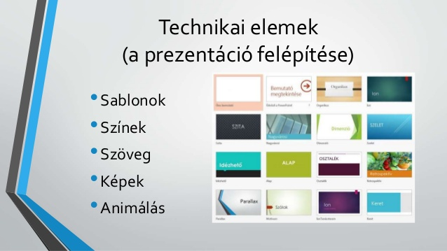

Prezentáció készítése
Ez a kurzus a Prezentáció készítése alapjait tartalmazza.
Tartalom
- Prezentációs programok szolgáltatásai
- Prezentáció felépítése
- Prezentáció készítése fajtái
- Szöveg és objektumok elhelyezése
- Formázás automatikus eszközökkel
- Egyéni animáció
- Áttünės, időzítés
- Egyéni formátumok beállításai
- Hiperhivatkozás
- kész prezentáció készitése